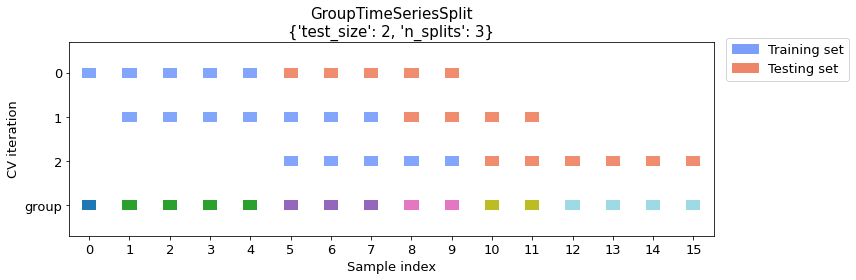

GroupTimeSeriesSplit: A scikit-learn compatible version of the time series validation with groups
A scikit-learn-compatible time series cross-validator that supports non-overlapping groups.
from mlxtend.evaluate import GroupTimeSeriesSplit
Overview
Time series tasks in machine learning require special type of validation, because the time order of the objects is important for a fairer evaluation of an ML model’s quality.
Also there can be different time units for splitting the data for different tasks - hours, days, months etc.
Here, we use time series validation with support of the groups which can be flexibly configured along with other parameters:
- Test size
- Train size
- Number of splits
- Gap size
- Shift size
- Window type
This GroupTimeSeriesSplit implementation is inspired by scikit-learn's TimeSeriesSplit but it has several advantages:
GroupTimeSeriesSplitlets you group data as you want before splitting, whileTimeSeriesSplitonly considers the record level.- It can be used for both holdout validation (n_splits=1) and cross-validation (n_splits>=2), whereas
TimeSeriesSplitcan be used only for the latter case. TimeSeriesSplituses only an expanding window, while for this implementation you can choose between both rolling and expanding window types.GroupTimeSeriesSplitoffers additional control for splitting using an additionalshift sizeparameter.
There are several features that need to be taken into account:
GroupTimeSeriesSplitis compatible with sklearn-learn API.- Numbers or custom non-numeric values can be used as groups
- However, groups should be consecutive
- Specifying the test size with either a) the train size or b) the number of splits is required parameters for splitting
- If full data can’t be used with specific parameters, the most recent data is considered for splitting
- If splitting is impossible (e.g., there is not enough data to split) using specified parameters, an exception will be raised
Before we illustrate the usage of GroupTimeSeriesSplit in the following examples below, let's set up a DummyClassifier that we will reuse in the following sections. Also, let's import the libraries we will be using in the following examples:
import numpy as np
import pandas as pd
from sklearn.dummy import DummyClassifier
from sklearn.model_selection import cross_val_score
from mlxtend.evaluate.time_series import (
GroupTimeSeriesSplit,
plot_splits,
print_cv_info,
print_split_info,
)
Prepare sample data
For the following examples, we are creating sample dataset consisting of 16 training data points with corresponding targets.
Features and targets
Let's assume that we have one numeric feature and target for the binary classification task.
data = [[0], [7], [6], [4], [4], [8], [0], [6], [2], [0], [5], [9], [7], [7], [7], [7]]
target = [1, 0, 1, 0, 1, 0, 0, 1, 1, 1, 0, 1, 1, 0, 0, 0]
X = pd.DataFrame(data, columns=["num_feature"])
y = pd.Series(target, name="target")
Group numbers
We create 6 different groups so that the first training example belongs to group 0, the next 4 to group 1, and so forth.
These groups do not have to be in ascending order (as in this dataset), but they must be consecutive.
groups = np.array([0, 1, 1, 1, 1, 2, 2, 2, 3, 3, 4, 4, 5, 5, 5, 5])
groups
array([0, 1, 1, 1, 1, 2, 2, 2, 3, 3, 4, 4, 5, 5, 5, 5])
Note that the following i another example of a correct group ordering (not sorted but consecutive):
np.array([5, 5, 5, 5, 1, 1, 1, 1, 3, 3, 2, 2, 2, 4, 4, 0])
However, the example below shows an incorrect group ordering (not consecutive), which is not compatible with GroupTimeSeriesSplit:
np.array([0, 1, 1, 1, 1, 2, 2, 2, 3, 3, 4, 4, 2, 2, 2, 2])
Group names (months)
We will add months as the index according to the specified groups for a more illustrative example.
months_map = {i: f"2021-0{i+1}" for i in range(6)}
months = np.array([months_map[group] for group in groups])
months
array(['2021-01', '2021-02', '2021-02', '2021-02', '2021-02', '2021-03',
'2021-03', '2021-03', '2021-04', '2021-04', '2021-05', '2021-05',
'2021-06', '2021-06', '2021-06', '2021-06'], dtype='<U7')
X = X.set_index(months)
Example 1 -- Multiple training groups (with train size specified)
Let's create a time series splitting with a training dataset that consists of 3 groups. And we will use 1 group for testing. In this case, the number of splits will be calculated automatically since both the training set and the test set sizes are specified.
The first 3 rows in the visualization describe how each split is distributed among groups.
The groups are visualized in the last row where each color represents different group.
cv_args = {"test_size": 1, "train_size": 3}
plot_splits(X, y, groups, **cv_args)
print_split_info(X, y, groups, **cv_args)

Train indices: [0 1 2 3 4 5 6 7]
Test indices: [8 9]
Train length: 8
Test length: 2
Train groups: [0 1 1 1 1 2 2 2]
Test groups: [3 3]
Train group size: 3
Test group size: 1
Train group months: ['2021-01' '2021-02' '2021-02' '2021-02' '2021-02' '2021-03' '2021-03'
'2021-03']
Test group months: ['2021-04' '2021-04']
Train indices: [1 2 3 4 5 6 7 8 9]
Test indices: [10 11]
Train length: 9
Test length: 2
Train groups: [1 1 1 1 2 2 2 3 3]
Test groups: [4 4]
Train group size: 3
Test group size: 1
Train group months: ['2021-02' '2021-02' '2021-02' '2021-02' '2021-03' '2021-03' '2021-03'
'2021-04' '2021-04']
Test group months: ['2021-05' '2021-05']
Train indices: [ 5 6 7 8 9 10 11]
Test indices: [12 13 14 15]
Train length: 7
Test length: 4
Train groups: [2 2 2 3 3 4 4]
Test groups: [5 5 5 5]
Train group size: 3
Test group size: 1
Train group months: ['2021-03' '2021-03' '2021-03' '2021-04' '2021-04' '2021-05' '2021-05']
Test group months: ['2021-06' '2021-06' '2021-06' '2021-06']
Please note that if we specify the number of groups for both the training and the test set, the split size is determined automatically, and the number of splits naturally changes with the groups sizes. For example, increasing the number of training groups will naturally result in a lower number of splits as shown below.
cv_args = {"test_size": 1, "train_size": 4}
plot_splits(X, y, groups, **cv_args)

Usage in CV
The example below illustrates how we can use the time series splitter with scikit-learn, i.e., using cross_val_score:
cv = GroupTimeSeriesSplit(**cv_args)
clf = DummyClassifier(strategy="most_frequent")
scores = cross_val_score(clf, X, y, groups=groups, scoring="accuracy", cv=cv)
print_cv_info(cv, X, y, groups, clf, scores)
Split number: 1
Train true target: [1 0 1 0 1 0 0 1]
Train predicted target: [0 0 0 0 0 0 0 0]
Test true target: [1 1]
Test predicted target: [0 0]
Accuracy: 0.0
Split number: 2
Train true target: [0 1 0 1 0 0 1 1 1]
Train predicted target: [1 1 1 1 1 1 1 1 1]
Test true target: [0 1]
Test predicted target: [1 1]
Accuracy: 0.5
Split number: 3
Train true target: [0 0 1 1 1 0 1]
Train predicted target: [1 1 1 1 1 1 1]
Test true target: [1 0 0 0]
Test predicted target: [1 1 1 1]
Accuracy: 0.25
Example 2 -- Multiple training groups (with number of splits specified)
Now let's take a look at an example where we don't specify the number of training groups. Here, we will split the dataset with test size (2 groups) and a specified number of splits (3 groups), which is sufficient for calculating the training size automatically.
cv_args = {"test_size": 2, "n_splits": 3}
plot_splits(X, y, groups, **cv_args)
print_split_info(X, y, groups, **cv_args)

Train indices: [0 1 2 3 4]
Test indices: [5 6 7 8 9]
Train length: 5
Test length: 5
Train groups: [0 1 1 1 1]
Test groups: [2 2 2 3 3]
Train group size: 2
Test group size: 2
Train group months: ['2021-01' '2021-02' '2021-02' '2021-02' '2021-02']
Test group months: ['2021-03' '2021-03' '2021-03' '2021-04' '2021-04']
Train indices: [1 2 3 4 5 6 7]
Test indices: [ 8 9 10 11]
Train length: 7
Test length: 4
Train groups: [1 1 1 1 2 2 2]
Test groups: [3 3 4 4]
Train group size: 2
Test group size: 2
Train group months: ['2021-02' '2021-02' '2021-02' '2021-02' '2021-03' '2021-03' '2021-03']
Test group months: ['2021-04' '2021-04' '2021-05' '2021-05']
Train indices: [5 6 7 8 9]
Test indices: [10 11 12 13 14 15]
Train length: 5
Test length: 6
Train groups: [2 2 2 3 3]
Test groups: [4 4 5 5 5 5]
Train group size: 2
Test group size: 2
Train group months: ['2021-03' '2021-03' '2021-03' '2021-04' '2021-04']
Test group months: ['2021-05' '2021-05' '2021-06' '2021-06' '2021-06' '2021-06']
Usage in CV
Again, let's take a look at how this looks in a scikit-learn context using cross_val_score:
cv = GroupTimeSeriesSplit(**cv_args)
clf = DummyClassifier(strategy="most_frequent")
scores = cross_val_score(clf, X, y, groups=groups, scoring="accuracy", cv=cv)
print_cv_info(cv, X, y, groups, clf, scores)
Split number: 1
Train true target: [1 0 1 0 1]
Train predicted target: [1 1 1 1 1]
Test true target: [0 0 1 1 1]
Test predicted target: [1 1 1 1 1]
Accuracy: 0.6
Split number: 2
Train true target: [0 1 0 1 0 0 1]
Train predicted target: [0 0 0 0 0 0 0]
Test true target: [1 1 0 1]
Test predicted target: [0 0 0 0]
Accuracy: 0.25
Split number: 3
Train true target: [0 0 1 1 1]
Train predicted target: [1 1 1 1 1]
Test true target: [0 1 1 0 0 0]
Test predicted target: [1 1 1 1 1 1]
Accuracy: 0.33
Example 3 -- Defining the gap size between training and test datasets
GroupTimeSeriesSplit let's you specify a gap size greater than 1 in order to skip a specified number of groups between training and test folds (the default gap size is 0). In the example below, we use a gap of 1 group to illustrate this.
cv_args = {"test_size": 1, "n_splits": 3, "gap_size": 1}
plot_splits(X, y, groups, **cv_args)
print_split_info(X, y, groups, **cv_args)

Train indices: [0 1 2 3 4]
Test indices: [8 9]
Train length: 5
Test length: 2
Train groups: [0 1 1 1 1]
Test groups: [3 3]
Train group size: 2
Test group size: 1
Train group months: ['2021-01' '2021-02' '2021-02' '2021-02' '2021-02']
Test group months: ['2021-04' '2021-04']
Train indices: [1 2 3 4 5 6 7]
Test indices: [10 11]
Train length: 7
Test length: 2
Train groups: [1 1 1 1 2 2 2]
Test groups: [4 4]
Train group size: 2
Test group size: 1
Train group months: ['2021-02' '2021-02' '2021-02' '2021-02' '2021-03' '2021-03' '2021-03']
Test group months: ['2021-05' '2021-05']
Train indices: [5 6 7 8 9]
Test indices: [12 13 14 15]
Train length: 5
Test length: 4
Train groups: [2 2 2 3 3]
Test groups: [5 5 5 5]
Train group size: 2
Test group size: 1
Train group months: ['2021-03' '2021-03' '2021-03' '2021-04' '2021-04']
Test group months: ['2021-06' '2021-06' '2021-06' '2021-06']
Usage in CV
The example below shows how this looks like in a scikit-learn context using cross_val_score:
cv = GroupTimeSeriesSplit(**cv_args)
clf = DummyClassifier(strategy="most_frequent")
scores = cross_val_score(clf, X, y, groups=groups, scoring="accuracy", cv=cv)
print_cv_info(cv, X, y, groups, clf, scores)
Split number: 1
Train true target: [1 0 1 0 1]
Train predicted target: [1 1 1 1 1]
Test true target: [1 1]
Test predicted target: [1 1]
Accuracy: 1.0
Split number: 2
Train true target: [0 1 0 1 0 0 1]
Train predicted target: [0 0 0 0 0 0 0]
Test true target: [0 1]
Test predicted target: [0 0]
Accuracy: 0.5
Split number: 3
Train true target: [0 0 1 1 1]
Train predicted target: [1 1 1 1 1]
Test true target: [1 0 0 0]
Test predicted target: [1 1 1 1]
Accuracy: 0.25
API
GroupTimeSeriesSplit(test_size, train_size=None, n_splits=None, gap_size=0, shift_size=1, window_type='rolling')
Group time series cross-validator.
Parameters
-
test_size: intSize of test dataset.
-
train_size: int (default=None)Size of train dataset.
-
n_splits: int (default=None)Number of the splits.
-
gap_size: int (default=0)Gap size between train and test datasets.
-
shift_size: int (default=1)Step to shift for the next fold.
-
window_type: str (default="rolling")Type of the window. Possible values: "rolling", "expanding".
Examples
For usage examples, please see https://rasbt.github.io/mlxtend/user_guide/evaluate/GroupTimeSeriesSplit/
Methods
get_n_splits(X=None, y=None, groups=None)
Returns the number of splitting iterations in the cross-validator.
Parameters
-
X: objectAlways ignored, exists for compatibility.
-
y: objectAlways ignored, exists for compatibility.
-
groups: objectAlways ignored, exists for compatibility.
Returns
-
n_splits: intReturns the number of splitting iterations in the cross-validator.
split(X, y=None, groups=None)
Generate indices to split data into training and test set.
Parameters
-
X: array-likeTraining data.
-
y: array-like (default=None)Always ignored, exists for compatibility.
-
groups: array-like (default=None)Array with group names or sequence numbers.
Yields
-
train: ndarrayThe training set indices for that split.
-
test: ndarrayThe testing set indices for that split.